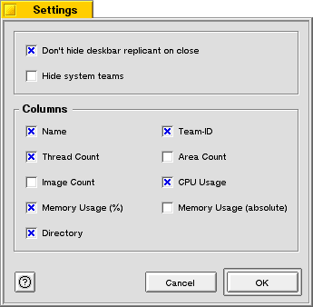
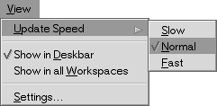

| Be TaskManager Documentation |
Be TaskManager stores the current state of almost every GUI element (e.g. postion of the main window, width of a column in the teams tab etc.) in its settings file. This means you don't have to resize or move the window to your preferred position every time you start the program.
All settings are automatically saved, when you close the main window.
To open the settings dialog select "Settings..." menu entry in the "View" menu.
The settings dialog provides the following options:
All settings which aren't part of the settings dialog are change through entries in the view menu.
| Slow | One update every 2 seconds. |
| Normal | One update every 1 second. |
| Fast | One update every 0.5 seconds. |
The settings are stored in /boot/home/config/settings/TaskMgr_settings. If you delete this file the default settings are restored.